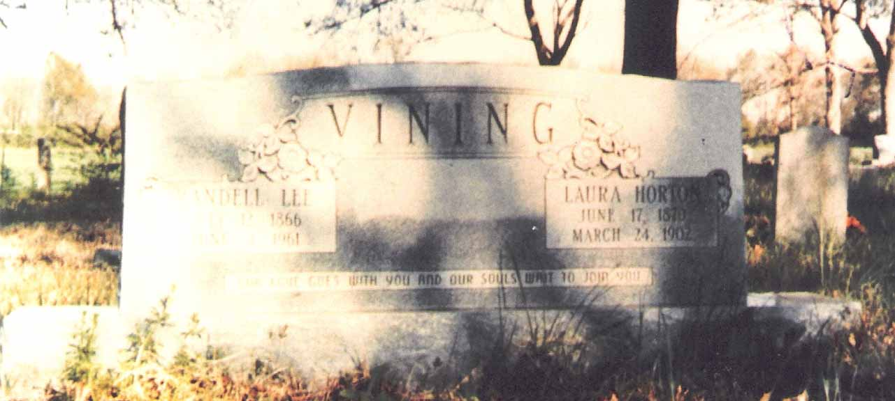
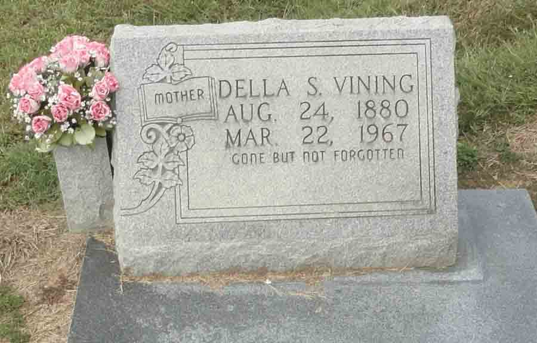
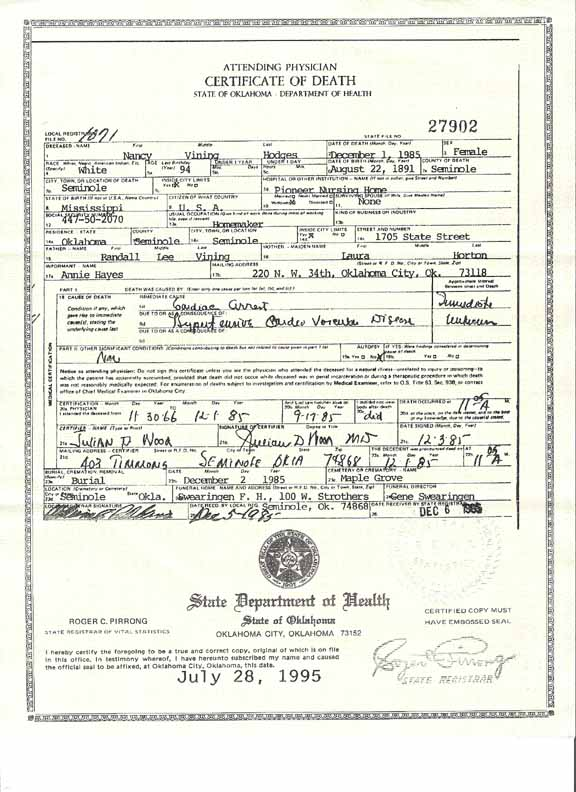
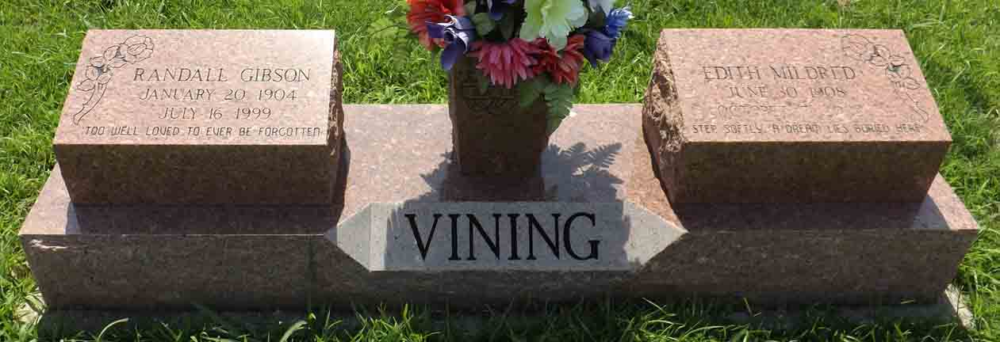

Family Data
Left to right: Randall Lee Vining, Nancy Vining Fallin Hodges (daughter of Randall Lee Vining), and Joseph Grant Hodges (husband of Nancy Vining Fallin Hodges):Census Data
| 1900 | 1910 | 1920 | 1930 | 1940 | |
| Randall Lee Vining | 33 | 43 | 53 | 63 | 73 |
| Laura Ann (Horton) Vining | 29 | dead | |||
| Della (Stewart) Vining | 29 | 39 | 49 | 59 | |
| Bessie [H.?] Vining | 10 | not living in this household | |||
| Nancy Vining | 8 | not living in this household | |||
| Julia H. Vining | 7 | not living in this household | |||
| Flora [G.?] Vining | 5 | 15 | not living in this household | ||
| Thomas H. Vining | 3 | 13 | 23 | married and living in separate household | |
| Rosa [H. or L.?] Vining | 1 | 11 | not living in this household | ||
| Laura Vining | 9 | not living in this household | |||
| Randall Gibson Vining | 6 | 15 | living in separate household | ||
| Mike Lee Vining | 3 | 13 | not living in this household | ||
| Bettie Lucille Vining | 2 | 11 | 22 | married and living in separate household | |
| Charles Leroy Vining | 2 m. | 9 | 20 | [married?] and living in separate household] | |
| George Washington Vining | 3 y., 10 m. | 14 | [married?] and living in separate household |


Death Data
Gravestone for Randall Lee Vining and Laura Ann Horton:



Research Opportunity
The 1910 census reported a 3-year-old daughter, [...]ary O., but the 1920 census reported a 13-year-old son, Mike. Resolution of these conflicting data is needed.